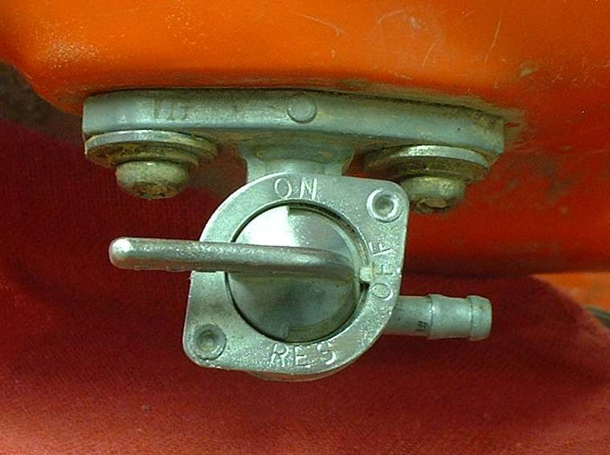

Fuel taps are costly for what they are. If a tap flows but will not shut off, a plain plastic inline valve fitted in the hose to the carburettor is a cheap fix. It is sold for garden machines. It gives on and off only, with no reserve, so it suits a bike that is kept topped up. It is also a stopgap for a tap that cannot be repaired.
Safety
- Fuel burns. Work outdoors, no flames, and fuel-safe containers.
- Use only a valve and hose that are made for petrol. Garden water fittings are not suitable.
- Check for leaks before every ride, and check the valve for cracks.
You need
- A plastic inline fuel valve to match the hose bore.
- Fuel hose, and new clamps (not worn or rusted ones).
- A container and rags.
Steps
- Turn off the tap, or if it will not close, lower the fuel level by draining the tank into a container. See Drain old or contaminated fuel.
- Pull the fuel hose off the carburettor and catch the fuel.
- Cut the hose near the carburettor end. Clamp the valve into the line with the arrow, if present, pointing to the carburettor.
- Fit a fuel filter in the line if the tap is still in service. It keeps dirt from the carburettor.
- Route the hose with no kinks, away from the exhaust and moving parts.
- Turn the valve on and look at every joint for several minutes.
- Turn the valve off whenever the bike is parked.
Check your work
- No fuel at the joints. The engine runs with the valve fully open.
- Closing the valve stops the fuel; the engine runs out and stops.
If it did not fix the problem
- Flooding continues with the valve off: Check the carburettor float and needle valve.
- No fuel with the valve open: Check the fuel tap, lines and flow.